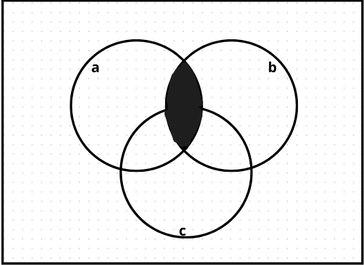
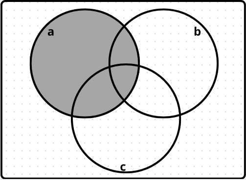
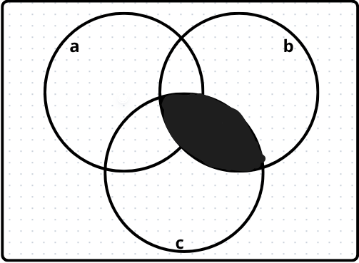
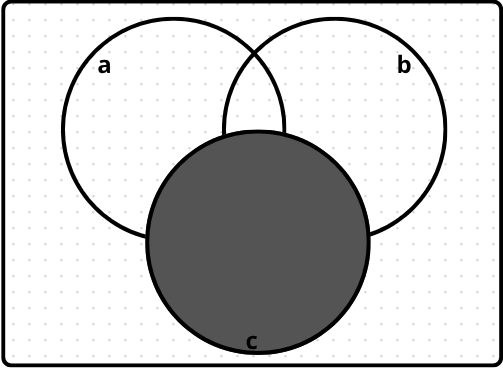
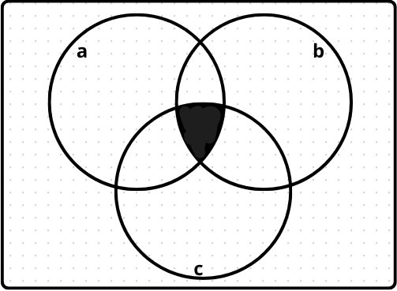
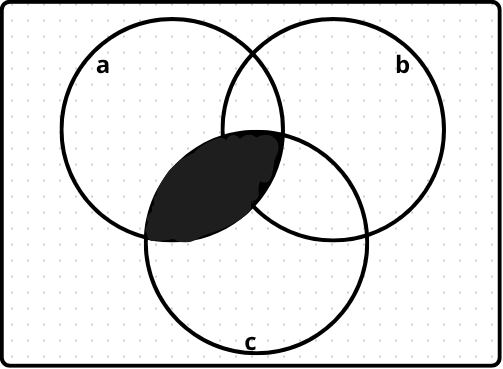

Datos proporcionados:
\( P(A) = 0.40 \)
\( P(B) = 0.30 \)
\( P(C) = 0.25 \)
\( P(A \cap B) = 0.23 \)
\( P(A^c \cap B^c \cap C^c) = 0.51 \)
Ademas sabemos que:
\(P(A | C) = .88\)
\(P(C | B) = .70\)
¿Cuál es la probabilidad de que un vacacionista que revisa su correo (A) también use celular (B)?
Usamos la fórmula de Probabilidad Condicional:
\( P(B|A) = \frac{P(A \cap B)}{P(A)} = \frac{0.23}{0.40} = \mathbf{0.575} \)
Resultado: 57.5% de probabilidad.
\(P(A \cap B)\)

\(P(B)\)

¿Cuál es la probabilidad de que alguien con laptop (C) también use celular (B)?
\[ P(C \cap B) = P(C|B) \cdot P(B) = 0.70 \cdot 0.30 = 0.21 \]
Ahora, calculamos la probabilidad condicional final:
\( P(B|C) = \frac{P(B \cap C)}{P(C)} = \frac{0.21}{0.25} = \mathbf{0.84} \)
Resultado: 84% de probabilidad.
\(P(C \cap B)\)

\(P(C)\)

Si el vacacionista revisó su correo (A) y trajo laptop (C), ¿cuál es la probabilidad de que use celular (B)?
Buscamos \( P(B | A \cap C) \). Primero necesitamos los componentes:
Ahora, calculamos la probabilidad condicional final:
\( P(B | A \cap C) = \frac{P(A \cap B \cap C)}{P(A \cap C)} = \frac{0.20}{0.22} \approx \mathbf{0.9091} \)
Resultado: 90.91% de probabilidad.
\(P(A \cap B\cap C \))

\(P(A \cap C)\)
